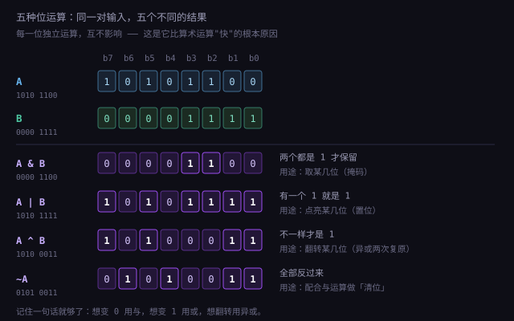
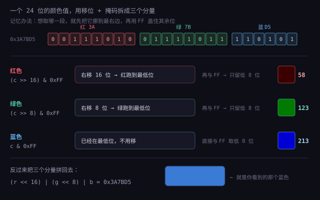

约 1.45 万字 · 2 张图 · 读完你能解释：为什么一个字节是 8 位、为什么 1TB 硬盘只剩 931GB、 以及程序员为什么爱用「按位与」
你在网络协议文档（RFC）里会看到大量 octet 这个词，比如「头部长度为 20 个 octet」。
它和 byte 指的是同一个东西——8 位。为什么要多造一个词？
因为历史上「byte」的宽度并不统一（前面说过有 6 位、9 位的机器）。 当网络标准要明确规定「必须是 8 位」时，就不能用 byte 这个模糊词， 于是采用了 ISO 的术语 octet（法语里 octet 就是「八位组」的意思）。
至于 byte 这个词本身，是 1956 年 IBM 的 Werner Buchholz 造出来的。 他原本写成 bite，但为了避免和 bit 只差一个字母、被误读误写，改成了 byte。 这是一个纯粹为了「印刷时不看错」而做的拼写改动。
CHAR_BIT 甚至允许不是 8——虽然现实中你遇不到。
标准的严谨程度，永远比日常用语高一个档。
先破一个直觉：「一个字节等于 8 位」不是自然规律，是一份商业协议的结果。
在 1960 年代，每个计算机厂商都有自己的字长和字节长度，乱得像各国的插座：
| 机器 | 一个「字符单元」多少位 | 原因 |
|---|---|---|
| UNIVAC（1951） | 6 位 | 只够表示大写字母、数字和少量符号 |
| PDP-10 | 9 位 | 能装下大写 + 小写 + 符号 |
| PDP-8 | 12 位 | 按 12 位为一「字」组织 |
| IBM 1401 | 6 位（BCD 字符） | 商业数据处理，只需要数字和字母 |
| ASCII 标准（1963） | 7 位 | 128 个字符，含大小写和标点 |
混乱的代价极高：数据不能互换，程序不能移植，打印机接不上别的电脑。 真正终结这场混乱的，是 1964 年 IBM 的 System/360。
它是历史上第一个「系列化」的计算机家族：从小的商用机到大的科学机，用同一套指令集、同一套外设接口。 为了兼顾「足够表示字符」和「硬件成本」，IBM 选了 8 位作为一个字节：
System/360 卖得太好，8 位字节就成了事实标准。后来 ASCII 也被扩展成了 8 位的「扩展 ASCII」， IBM PC 更是全盘继承。等到 1980 年代微型计算机爆发时，「一字节 = 8 位」已经是所有人默认的前提， 没人再讨论它是否最优。
4 个位有个专门的名字叫 nibble（半字节，也有译作「四位组」）。
它之所以还有名字，是因为一个十六进制数字正好对应一个 nibble——
你看到的每一个 0xE4 里的 E 和 4，都是 4 个比特。
所以「一字节 = 两位十六进制」不是巧合，是设计的必然： 十六进制就是为「人读二进制」而发明的中间语言。
8 位有 256 个位置，而 ASCII 只用了前 128 个（编号 0~127）。剩下的 128~255 空着， 于是各国开始各显神通——这一段历史解释了为什么今天的乱码问题这么难缠。
| 编码 | 怎么用这 128 个位置 | 后果 |
|---|---|---|
| CP437（IBM PC 原始字符集） | 塞进了希腊字母、数学符号、以及一堆用来画表格的框线字符（┌─┐│└┘） | DOS 时代的界面就是靠这些字符画出来的 |
| ISO-8859-1（Latin-1） | 西欧语言：é、ñ、ü、ß 等 | 英语国家够用，中文完全装不下 |
| GBK / GB2312 | 用两个字节表示一个汉字（首字节和次字节都 ≥ 0x80，以区别于 ASCII） | 能装两万多汉字，但和日文、韩文编码互不兼容 |
| Shift-JIS（日文） | 同样是双字节，但划分方式不同 | 中文文件在日文系统里打开就是一堆乱码 |
问题的根源是：每个国家都在自己那 256 个位置上做文章，但没有人和别人商量。
于是同一个字节 0xB0，在 CP437 里是「░」，在 Latin-1 里是「°」，在 GBK 里是某个汉字的第一个字节。
1963 年定下的 ASCII，前 32 个位置（0~31）全部留给控制字符，不是给人看的字，而是给机器下的指令：
| 编号 | 缩写 | 原意 | 今天还在用吗 |
|---|---|---|---|
| 7 | BEL | 让电传打字机响铃 | 还在——\a 就是它，终端里会「叮」一声 |
| 8 | BS | 退格（打字机往回挪一格） | 还在——就是键盘上的 Backspace |
| 9 | HT | 水平制表 | 还在——就是 Tab 键 |
| 10 | LF | 换行（纸往上卷一行） | 还在——Unix 的换行符 |
| 13 | CR | 回车（打印头回到行首） | 还在——Windows 的换行由它 + LF 组成 |
| 27 | ESC | 切换后续字符的含义 | 还在——终端颜色代码 \033[31m 就是它开头 |
| 127 | DEL | 删掉纸带上打孔的那一位 | 还在——就是 Delete 键 |
六十多年前为机械打字机设计的控制码，今天还在你的键盘和终端里活着。 这是「兼容性」最直观的证据：只要还有人在用，旧的约定就死不掉。
这四个词在日常对话里经常被混着用，但它们指的是不同层次的东西。混了就会在关键时刻出错。
| 词 | 是什么 | 大小 | 容易错在哪 |
|---|---|---|---|
| bit（位） | 信息的最小单位，一个 0 或 1 | 1 bit | 写成小写 b；网络带宽用它 |
| byte（字节） | CPU 寻址的最小单位 | 8 bit | 写成大写 B；文件大小用它 |
| word（字） | CPU 一次能处理的数据宽度 | 随架构变（16/32/64 位） | 在 x86 上「字」固定是 16 位，和「字长」不是一回事 |
| 字长（word size） | 这个 CPU 的通用寄存器有多宽 | 现在主流 64 位 | 和「操作系统位数」有关但不是一回事 |
你在文档里会看到 WORD、DWORD、QWORD 这几个类型，它们的定义是：
WORD = 16 位（2 字节）DWORD = double word = 32 位（4 字节）QWORD = quad word = 64 位（8 字节）
为什么 64 位系统里的 WORD 还是 16 位？因为这套命名是 16 位时代（Intel 8086）定下来的，
后来为了兼容一直没改。所以「字」在 x86 世界里是一个被冻住的历史概念，
而「字长」是活的，跟着 CPU 升级。
「字长」这个词最实际的影响，就是它直接决定了一个程序能看见多大的世界。
地址在 CPU 里也是一个整数。32 位寄存器能表示 0 到 2³²−1，也就是 4,294,967,296 个不同的地址。 如果每个地址对应一个字节，那么这台机器最多只能寻址 4GB 内存。 这不是操作系统的限制，是「用 32 个比特表示地址」这件事的数学天花板。
| 字长 | 地址空间 | 实际能装多少内存 |
|---|---|---|
| 16 位（8086） | 2¹⁶ = 64KB（用段寄存器可到 1MB） | 早期 PC 就是这个量级 |
| 32 位 | 2³² = 4GB | 约 3.2~3.5GB 可用（一部分被硬件映射占用） |
| 64 位 | 2⁶⁴ ≈ 16EB（理论） | 目前实际用 48 位地址 = 256TB，远没用到上限 |
后来 Intel 推出过一个叫 PAE（物理地址扩展）的方案：把地址总线加宽到 36 位，理论上能寻址 64GB。 听起来完美，但它有个致命的限制：页表项还是 32 位，所以单个进程仍然只能看到 4GB。
也就是说，一台服务器可以插 64GB 内存、跑十个各占 4GB 的程序，但任何一个程序都不能超过 4GB。 对于数据库、视频编辑这类「单个进程就要吃几十 GB」的场景，PAE 等于没用。这才逼着大家走向 64 位。
64 位 x86 并不是 Intel 先做出来的。Intel 当年押注的是全新的安腾架构（Itanium）， 结果因为不兼容 32 位程序、编译器难写，市场反应冷淡。 反而是 AMD 在 2003 年推出了「在 x86 基础上直接扩到 64 位、且兼容 32 位」的方案，叫 AMD64。
Intel 后来跟进，叫 EM64T，最后两家统一称作 x86-64（或 x64）。
这是 AMD 在桌面 CPU 历史上最漂亮的一次反击，也是为什么 Linux 内核里这个架构叫 amd64 而不是 intel64。
64 位下指针从 4 字节变成 8 字节。一个满是指针的数据结构，内存占用几乎翻倍。 这就是为什么同样的程序，64 位版本往往比 32 位版本吃更多内存—— 它换来的不是「更快」，而是「能装更多」。
至于「64 位更快」这个印象，一半来自更大的寄存器（一次能算更宽的数）， 另一半来自 64 位下多出来的 8 个通用寄存器（x86-64 把寄存器从 8 个扩到 16 个）， 编译器能少往内存里倒腾数据。
这是「字长」这个概念最容易扎人的地方：在 C/C++ 里，int 的宽度不一定是 32 位。
C 标准只规定了「最小范围」，没规定具体多少位。
| 类型 | C 标准要求的最小范围 | 常见实际宽度 |
|---|---|---|
short | 至少 16 位 | 16 位 |
int | 至少 16 位 | 32 位（几乎所有现代平台） |
long | 至少 32 位 | Windows 64 位是 32 位，Linux 64 位是 64 位 |
long long | 至少 64 位 | 64 位 |
| 指针 | 取决于地址空间 | 32 位系统 4 字节，64 位系统 8 字节 |
注意 long 那一行：同样一段代码，在 Windows 上 sizeof(long) == 4，
在 Linux 上却是 8。这两种模型有专门的名字：Windows 叫 LLP64（long 和指针分开），
Linux 叫 LP64（long 和指针都是 64 位）。
printf("%ld", x) 打印一个在 Windows 上是 32 位、Linux 上是 64 位的值，
一边会截断，一边会读错位。更隐蔽的是「结构体大小对不上」，导致按二进制解析文件时全盘错位。
<stdint.h> 里的定宽类型：int32_t、uint64_t、
intptr_t。名字里就把宽度写死了，跨平台不会再变。
相比之下，Java 和 C# 把宽度写进了语言规范：int 永远是 32 位，long 永远是 64 位。
代价是它们必须跑在虚拟机上（由虚拟机屏蔽平台差异），
换来的是「一次编译，到处运行」的确定性。
这是一个几乎每个人都被坑过一次的问题：买了一块 1TB 的硬盘，插上电脑显示 931GB。 那 69GB 去哪了？
答案：什么都没少，是两套进位制在打架。
| 体系 | 换算 | 谁在用 |
|---|---|---|
| 十进制（SI 标准） | 1 KB = 1000 B，1 MB = 1000²，1 TB = 1000⁴ | 硬盘厂商、网络带宽、macOS 的 Finder、国际单位制 |
| 二进制（IEC 标准） | 1 KiB = 1024 B，1 MiB = 1024²，1 GiB = 1024³ | Windows 资源管理器、内存容量、大多数编程场景 |
1998 年，国际电工委员会（IEC）为了解决这个混乱，正式规定了 KiB / MiB / GiB 这套带「i」的写法，
专门表示 1024 进制；而 KB / MB / GB 留给 1000 进制。但三十多年过去，Windows 依然在界面上写「GB」却按 1024 算，
于是这场混战延续至今。
厂商说的 1 TB = 1,000,000,000,000 字节
Windows 按 1024 进制除：
1,000,000,000,000 ÷ 1024 ÷ 1024 ÷ 1024 ÷ 1024
= 931.32 GiB ← 显示成「931 GB」
差的比例是 (1000/1024)⁴ ≈ 0.9095，所以任何标称容量在 Windows 里都会「缩水」约 9%。
4TB 的盘显示约 3.63TB，128GB 的手机在电脑上显示约 119GB，都是同一个原因。
df 命令的 Linux）会同时给你两套数字，看错一个就会误判磁盘快满了。
因为内存是按「地址」组织的，而地址是二进制的。2¹⁰ = 1024 刚好接近 1000， 于是早期工程师就用「K」这个前缀表示 1024，图个顺口。这是历史惯性，不是数学必然。
顺带一提：网络带宽从来不用 1024。100Mbps 就是每秒一亿个比特，
换算成下载速度是 100 ÷ 8 = 12.5 MB/s（这里用的是 1000 进制）。
所以你办的「千兆宽带」，理论峰值是 125MB/s，不是 1024MB/s。
插了 8GB 内存，任务管理器显示 7.9GB；插了 16GB，显示 15.8GB。这和硬盘那种「1000/1024」的账不一样， 内存本来就是按 1024 算的，所以少掉的那部分是真的被别的东西占用了。
| 被谁拿走 | 大概多少 | 为什么 |
|---|---|---|
| 集成显卡共享内存 | 几百 MB ~ 2GB（可调） | 核显没有独立显存，要从系统内存里划一块当显存用 |
| 硬件保留（Hardware Reserved） | 几十 MB ~ 几百 MB | 主板、PCIe 设备映射到物理地址空间的那一段，系统不能用 |
| BIOS / 固件 | 几十 MB | 开机自检、管理引擎等要常驻 |
想看清具体数字，运行 msinfo32，在「系统摘要」里能看到「已安装的物理内存」和「可用的物理内存」两个值，
差额就是被硬件占走的。
到这里，字节还只是一个「容器」。位运算才是真正让字节变得有用的东西—— 它允许你不把字节当成一个整体，而是拆开，对其中某一位下手。
五种基本操作，每一种都对应一个「意图」：

&）：留下我想要的那几位规则：两个都是 1，结果才是 1。所以任何一位和 0 相与都变 0，和 1 相与则保持原样。
1101 0110 （原数据）
& 0000 1111 （掩码：只看低 4 位）
───────────
0000 0110 （低 4 位被保留，高位被清零）这是「取子串」的标准手法：想取哪几位，就在那几位上放 1，其余放 0。
|）：把我想要的几位点亮规则：有一个 1，结果就是 1。所以和 0 相或保持原样，和 1 相或必变 1。
1101 0110
| 0000 0001 （把最低位点亮）
───────────
1101 0111用途：打开某个开关、把权限加上去、给一个状态打标记。
^）：不同才为 1规则：两个不一样，结果才是 1。它有个别名叫「可逆的或」——同一个值异或两次，会回到原样。
1010 1100
^ 0000 1111
───────────
1010 0011 ← 低 4 位被翻转
1010 0011
^ 0000 1111
───────────
1010 1100 ← 再异或一次，回来了这个「异或两次回到原点」的性质，撑起了好几个看起来很神奇的技巧，后面 1.1.2-7 专门讲。
~）：全部反过来
规则：0 变 1，1 变 0。听起来最简单，但它是唯一一个会受「位宽」影响的运算：
对一个 8 位的 0000 0001 取反是 1111 1110（254）；
对一个 32 位的同一个数取反，前面会多出 24 个 1。
11111111：
1 的按位取反是 11111110，再加 1 就是 11111111。
取反加一，等于「在模 2ⁿ 的意义下取相反数」。这一段在 1.1.3 会展开，这里先埋个伏笔。
<< 是左移，右边补 0；>> 是右移。
左移一位等于乘 2，右移一位等于除 2（向下取整）。这个性质在 1.1.2-6 细讲。
位运算只有两个输入、一个输出，所以穷举所有情况只需要 4 行。这 4 行就是它们的全部定义：
| a | b | a & b（与） | a | b（或） | a ^ b（异或） | ~a（非） |
|---|---|---|---|---|---|
| 0 | 0 | 0 | 0 | 0 | 1 |
| 0 | 1 | 0 | 1 | 1 | 1 |
| 1 | 0 | 0 | 1 | 1 | 0 |
| 1 | 1 | 1 | 1 | 0 | 0 |
看这张表能读出每个运算的「性格」：与很严格（必须两个都 1），或很宽松（有一个 1 就行）， 异或很挑（必须不一样），非最独断（只看自己）。
有一条定律在写代码时极其常用，但很多人只是背下来，不知道为什么：
~(a & b) == ~a | ~b
~(a | b) == ~a & ~b用一句话说：「不是（A 且 B）」等于「非 A 或非 B」。 生活里的例子：不是「又高又帅」，等价于「或者不高，或者不帅」。
为什么它重要？因为它让你能在不改变逻辑的前提下，把条件换个写法。 比如这段判断「这个用户不是既已登录又有权限」：
if (!(loggedIn && hasPermission)) { ... }
// 等价于（更好读，也更容易拆开单独处理）
if (!loggedIn || !hasPermission) { ... }
「把某一位清零」的标准写法是 x &= ~mask。为什么是「非 mask」？
因为 mask 里那个 1 表示「我要处理这一位」，取反之后它就变成 0，
和任何数相与都会把这一位清零——其余位是 1，保持原样。
x = 1010 1100
mask = 0000 1111 （想清掉低 4 位）
~mask= 1111 0000
x & ~mask = 1010 0000 ← 低 4 位清零，高 4 位不动x | mask 置位、x & ~mask 清位、x ^ mask 翻转。
记住这三个，你在读任何底层代码时都不会卡住。
「掩码」（mask）这个词很形象：它像一张挖了洞的纸，盖在数据上，只有洞的位置能透出来。 洞就是 1，实心就是 0——这正好是「与」运算。
掩码是位运算里最实用的技巧，没有之一。下面四个例子，全是你每天都在用的东西。
网页里的颜色 #3A7BD5，在内存里通常存成一个 32 位整数：0x3A7BD5（红 3A、绿 7B、蓝 D5）。
要单独取出红色分量，做法是把它右移到最低位，再和 0xFF 相与：
const c = 0x3A7BD5;
红色 = (c >> 16) & 0xFF = 0x3A = 58
绿色 = (c >> 8) & 0xFF = 0x7B = 123
蓝色 = c & 0xFF = 0xD5 = 213
0xFF，就能分别取出三个通道。改颜色、做滤镜、算亮度，底层全是这套动作。
192.168.1.5 在计算机里是一个 32 位数：0xC0A80105。
子网掩码 255.255.255.0 是 0xFFFFFF00。两者相与：
1100 0000 . 1010 1000 . 0000 0001 . 0000 0101 （192.168.1.5）
& 1111 1111 . 1111 1111 . 1111 1111 . 0000 0000 （255.255.255.0）
─────────────────────────────────────────────────
1100 0000 . 1010 1000 . 0000 0001 . 0000 0000 （192.168.1.0）结果就是「网络号」。所以判断「这两台机器在不在同一个网段」，计算机做的事就是： 各自和掩码相与，看结果是否相同。这就是「子网掩码」这个名字的来历——它真的是一张掩码。
Linux 的 chmod 755，拆开是 111 101 101：
| 位 | 值 | 含义 | 三个一组 |
|---|---|---|---|
| 第 0 位 | 1 | 执行 | 其他人的权限 = 5 |
| 第 1 位 | 0 | 写 | |
| 第 2 位 | 1 | 读 | |
| 第 3~5 位 | 101 | 所属组的读/写/执行 | = 5 |
| 第 6~8 位 | 111 | 属主的读/写/执行 | = 7 |
要判断「这个文件我能不能执行」，只需要一句 mode & 0o001。
一次运算，不用读三个字段。
// 判断奇偶：只看最低位（比 x % 2 快，而且对负数也正确）
isOdd = (x & 1) === 1
// 判断是不是 2 的幂：2 的幂只有一位是 1，减一之后全变 1，相与必为 0
isPowerOfTwo = (x & (x - 1)) === 0
// 取模 2ⁿ：因为 2ⁿ 是 1000…，减一是 0111…，正好当掩码
x % 8 等价于 x & 7
x % 1 6 等价于 x & 15x % 2 在编译器眼里会自动变成 x & 1；哈希表的大小取 2 的幂，就是为了把取模换成与运算。
你写 % 是人话，它跑起来是位运算。
你大概在文档里见过这类话：「HashMap 的初始容量建议设为 2 的幂」。这不是风格建议，是性能要求。 原因就在掩码。
哈希表本质是一个数组。你存一个键值对，它先用哈希函数把键算成一个整数，再把这个整数「折」到数组长度范围内， 得到一个下标，数据就放那儿。
index = hash(key) % capacity这一步取模，是整个操作里最贵的部分之一——如果每次插入、查找都要做一次除法，性能就上不去。
如果 capacity 恰好是 2 的幂，比如 16，那么 capacity - 1 就是 15，
二进制是 0000 1111。一个数和它相与，等价于「只保留最低 4 位」——
而最低 4 位能表示 0~15，正好就是下标的范围。
hash = 10110110 11001010
capacity = 16 → mask = 15 = 0000 1111
index = hash & mask = 0000 1010 = 10
这和 hash % 16 的结果完全一样，但一次位与代替了一次除法。
在每秒要查几百万次的场景里，这个差别是实打实的。
掩码只看最低几位，意味着高位的信息被完全丢弃。如果哈希函数算出来的值「低位分布很差」 （比如都是偶数、或者末尾总是 0），那么一半以上的桶永远空着，另一半挤成一串。
Java 的 HashMap 因此加了一个「扰动函数」：先把哈希值的高 16 位异或到低 16 位， 让高位也参与进来。这样即使原始哈希的低位有规律，打散之后也均匀了。
h ^= (h >>> 16) // 把高 16 位的信息"混"进低 16 位不同的键算出同一个下标，这叫冲突。两种主流处理：
| 方式 | 做法 | 优缺点 |
|---|---|---|
| 链地址法 | 每个桶挂一个链表，冲突的元素往后串 | 实现简单；冲突多时退化成链表，查询变慢（Java 8 之后超过 8 个就转红黑树） |
| 开放寻址 | 桶被占了就按规则找下一个空位 | 内存连续、缓存友好；但删除麻烦，且装太满会急剧变慢 |
「装太满会变慢」这件事有一个量化指标叫负载因子。 大多数实现默认 0.75：装到 75% 就扩容。因为再往上，冲突概率会非线性上升。
上一节说了「和掩码相与得到网络号」。这里给一个完整的手算例子，因为它是网络部分所有计算的地基。
任务：把 192.168.1.0/24 切成 4 个子网。
/24 表示「前 24 位是网络号，后 8 位是主机号」。
掩码写全就是 255.255.255.0，二进制是 24 个 1 加 8 个 0。
2² = 4，所以从主机号里借 2 位当子网号。新的前缀长度是 24 + 2 = /26，
掩码变成 255.255.255.192（最后一段是 1100 0000 = 192）。
剩下 6 位当主机号，所以每个子网有 2⁶ = 64 个地址，其中可用 62 个（去掉网络号和广播地址）。
| 子网 | 网络号 | 可用范围 | 广播地址 |
|---|---|---|---|
| 第 1 个 | 192.168.1.0 | .1 ~ .62 | 192.168.1.63 |
| 第 2 个 | 192.168.1.64 | .65 ~ .126 | 192.168.1.127 |
| 第 3 个 | 192.168.1.128 | .129 ~ .190 | 192.168.1.191 |
| 第 4 个 | 192.168.1.192 | .193 ~ .254 | 192.168.1.255 |
注意每个子网的「广播地址」都是下一个子网「网络号」减一。这不是巧合： 主机号全 0 是网络号，全 1 是广播地址，两者都不能分给设备。
网络号 = IP 地址 & 掩码
广播地址 = IP 地址 | ~掩码 （把主机位全置 1）
以 192.168.1.100/26 为例：
IP 1100 0000.1010 1000.0000 0001.0110 0100 (192.168.1.100)
掩码 1111 1111.1111 1111.1111 1111.1100 0000 (/26)
─────────────────────────────────────────────────
网络号 1100 0000.1010 1000.0000 0001.0100 0000 (192.168.1.64)
广播 1100 0000.1010 1000.0000 0001.0111 1111 (192.168.1.127)所以 192.168.1.100 属于第 2 个子网，可用范围是 .65~.126。
把二进制数左移一位，相当于每一位的权重都翻倍，所以整个数的值翻倍：
0000 0101 = 5
<< 1 位
0000 1010 = 10 （乘 2）
0000 0101 = 5
>> 1 位
0000 0010 = 2 （除 2，向下取整）
这个性质在硬件上几乎免费——移位只是把线挪一下位置，不需要加法器。
所以在早期 CPU 上，「乘 2 用移位」比「真的做乘法」快十倍以上。
今天的编译器仍然会做这个优化：你写 x * 8，它生成的是 x << 3。
| 类型 | 规则 | 负数怎么处理 | 用在哪 |
|---|---|---|---|
| 逻辑右移 | 左边一律补 0 | 会把负数变成很大的正数 | 处理无符号数、位图、哈希 |
| 算术右移 | 左边补符号位（原来是 1 就补 1） | 保持符号，等价于「除 2 并向负无穷取整」 | 有符号数的除法 |
举一个会被坑到的例子：-8 >> 1 在算术右移下是 -4（正确）；
如果被当成逻辑右移，会得到一个巨大的正数——因为符号位那个 1 被挪到了低位，数值全乱了。
-7 >> 1 得 -4，而 -7 / 2 在 C 里是 -3（向零取整）。
差的这一个 1，能让分页计算、坐标变换、音频重采样全部出错。
左移时，被挤出最高位的那些比特会直接消失（除非 CPU 把它们收进进位标志）。
所以对一个 8 位数 1000 0000（128）左移一位，得到的是 0000 0000，不是 256。
这不是 bug，是「定长容器」的必然：容器只有 8 个格子，装不下的部分只能丢。 理解了这一点，你才能理解后面所有关于「溢出」的问题。
有些场景不希望丢位，而是让最高位「绕回」最低位，这叫循环移位（rotate）。 它在加密算法里非常常见——因为循环移位是可逆的，而且能把信息搅乱。
很多教程会说「用移位代替乘法更快」。这句话在 1980 年代是对的，在今天基本是错的——
因为你写 x * 8，编译器生成的本来就是移位指令。
| 优化名 | 它干了什么 | 你写的代码 | 实际生成的 |
|---|---|---|---|
| 常量折叠 | 在编译期就把能算的算完 | x * (3 + 5) |
x * 8 → shl 3 |
| 强度削减 | 把贵的运算换成便宜的 | x / 2（无符号） |
shr 1 |
| 循环不变量外提 | 把循环里每次都不变的部分挪出去 | 循环里反复算 n * 100 |
算一次存在寄存器里 |
| 死代码消除 | 删掉结果没人用的计算 | 算了个值但从不使用 | 整段删掉 |
| 向量化 | 把四个数打包成一条指令一起算 | 一个 for 循环累加数组 | 用 SIMD 指令一次算 4~8 个 |
编译器的铁律是「优化后的程序必须和原程序行为完全一致」。所以遇到这些，它会选择保守：
a 和 b 会不会是同一个？），编译器不敢假设它们互不影响。
这也是为什么 C/C++ 有 restrict、const 这些关键字——它们是给编译器的「承诺书」：
「我保证这两个指针不重叠，你放心优化。」
异或（XOR）是位运算里最有趣的一个，因为它有一个别的运算都没有的性质： 自己和自己异或是 0，任何数和 0 异或是它自己。
a ^ a = 0
a ^ 0 = a就这两条，撑起了四个漂亮的技巧。
a = a ^ b
b = a ^ b // 此时 a 已经是 a^b，所以 b = (a^b)^b = a
a = a ^ b // a = (a^b)^a = b三步之后，两个数换了位置，中间没借用第三个变量。 这个技巧在嵌入式里很常见（省一个寄存器），但在现代代码里不建议用—— 可读性差，而且在某些语言里如果 a 和 b 是同一个变量，会被算成 0。
题目：一个数组里，除了一个数出现一次，其他数都出现两次，找出那个落单的数。
把所有数异或起来，成对的会互相抵消成 0，
剩下的就是那个落单的数。
[2, 3, 2, 4, 4] → 2^3^2^4^4 = 3这个解法的时间复杂度是 O(n)，空间复杂度是 O(1)——不需要哈希表，不需要排序。 它是「用数学性质换掉数据结构」的经典例子。
如果密钥是真正随机的、和明文一样长、且只用一次，那么「明文异或密钥 = 密文」， 「密文异或密钥 = 明文」。
明文 1011 0011
密钥 0110 1101 （必须真随机）
密文 1101 1110
密文 1101 1110
密钥 0110 1101
明文 1011 0011 ← 还原这就是「一次性密码本」（One-Time Pad），理论上唯一被证明「绝对安全」的加密方式。 但它在现实中几乎用不了：密钥必须和消息一样长、必须真随机、必须只使用一次而且不能泄露。 所以真正的加密用的是别的方案，但异或依然是几乎所有加密算法的核心零件。
RAID 5 用 N 块盘存数据，再加一块校验盘。校验块不是「复制」，而是把所有数据块异或起来。
数据盘1 A
数据盘2 B
数据盘3 C
校验盘 P = A ^ B ^ C
假设盘2 坏了，B 丢了：
B = A ^ C ^ P ← 剩下的全异或一遍就还原了这就是为什么 RAID 5 允许坏一块盘而不丢数据，而且校验只占一块盘的空间（而不是翻倍）。 代价是：每次写入都要重算校验，所以写性能比读性能差一截。
上一节提到「校验」，但没说具体怎么算。这里补上，因为它是最能体现「异或即加法」的地方。
把一段数据的所有比特异或起来，结果是 0 或 1。这个结果就是奇偶校验位。 发送方把它附在数据后面，接收方收到后重新算一遍，两者不一致，就说明中间有比特翻转过。
数据：1 0 1 1 0 0 1 0
异或：1^0^1^1^0^0^1^0 = 0
校验位：0
接收方重算，如果得到 1 → 一定出错了为什么异或能当校验？因为「异或」本质是模 2 的加法： 每翻转一位，总和就加 1，奇偶性随之改变。所以它是「统计有多少个 1，看是奇数还是偶数」。
1950 年，理查德·汉明想出一个办法：用多个校验位，让每个校验位负责「一半的位置」。 这样当某一位出错时，会把对应的几个校验位同时打破——读出来的「哪几位错了」这个组合， 正好指向出错的那一位的位置编号。
具体的数学关系是：如果有 k 个校验位、n 个数据位，需要满足
2^k ≥ n + k + 1。因为 k 个校验位能组合出 2^k 种状态，其中一种表示「没错」，
剩下 2^k − 1 种要能指出具体哪一位错了，所以要 ≥ n + k。
| 数据位 n | 需要校验位 k | 总位宽 | 开销 |
|---|---|---|---|
| 4 | 3 | 7 | 75% |
| 8 | 4 | 12 | 50% |
| 64 | 7 | 71 | 11% |
| 128 | 8 | 136 | 6% |
注意最后一列：数据越长，校验的相对开销越小（log 增长）。 这也是为什么 ECC 内存修正 64 位数据只要 8 个额外比特——代价很小，收益很大。
上一节说异或有四大用途。其实还有两个更隐蔽、但更重要的用途：算校验和打散数据。
CRC 的实现极其简单，只有一个循环：
crc = 0
for 每个字节 b:
crc = crc ^ b // 先把新字节"异或"进来
重复 8 次:
if (crc & 0x80) // 最高位是 1 吗
crc = (crc << 1) ^ 0x07 // 左移，再异或一个"生成多项式"
else
crc = crc << 1
crc = crc & 0xFF // 保持在 8 位核心是两个动作：异或（把新信息混进来）和移位（让旧信息影响后面的位）。 正因为有移位，一个字节的错误会「扩散」到后面很多位， 所以连续一片出错（磁盘划痕、网线干扰）也能被查出来——这是普通累加和做不到的。
0x07 是什么？它是「生成多项式」的系数，CRC-8 用的是 x⁸ + x² + x + 1。
不同的多项式对应不同的 CRC 变体（CRC-16、CRC-32 各有标准值）。
换个多项式，就像换了一把尺子，同一个数据算出的校验值完全不同——所以两端的多项式必须约定一致。
MurmurHash3 的收尾步骤（finalizer）是教科书级的一段代码：
h ^= h >>> 16;
h *= 0x85ebca6b;
h ^= h >>> 13;
h *= 0xc2b2ae35;
h ^= h >>> 16;模式很清楚：右移 + 异或 + 乘一个奇数，重复三轮。 右移把高位的信息搬到低位，异或让它和原来的低位混合，乘法再把影响扩散到所有位。
为什么要这么折腾？因为哈希表用掩码取下标时只看低位（前面讲过）。 如果原始数据的高位有规律、低位却没变化（比如一堆连续的整数）， 直接取低位会导致大量冲突。这套「搅拌」让输入的任何一位变化，都能影响输出的所有位。
如果一个状态只有「是/否」两种，它只需要 1 位。而一个字节有 8 位—— 这意味着一个字节可以同时记录 8 件事。
这种用法叫「位图」（bitmap）或「位标志」（bit flags）。它的价值在于极度节省空间：
| 存法 | 100 万个「是/否」占多少 |
|---|---|
| 每个用一个布尔变量（按 1 字节算） | 1,000,000 字节 ≈ 1MB |
| 用位图（每位一个） | 125,000 字节 ≈ 122KB |
| 差距 | 8 倍 |
8 倍看起来不多，但当数据量到十亿级时，这个差别决定了「能不能全放进内存」。
Windows 的文件属性（只读、隐藏、系统、存档）就是一个位图。
你勾选「隐藏」，程序做的事是 attributes |= 0x02；取消则 attributes &= ~0x02。
一个用户开通了哪些功能，可以存成一个整数：
0b0000_0101 表示「第 1 项和第 3 项已开通」。
判断有没有开通第 3 项，只需 flags & 0b100。
数据库里只存一个数字，比存一张「用户-功能」关系表省太多。
这是一个更高级的用法：用一大片位图记录「某个东西可能存在」。 它的特点是只会误判「存在」，绝不会误判「不存在」—— 所以适合做「先查一遍，确定不在就直接拒绝」的前置过滤器（比如「这个用户名是不是已被注册」）。
0x1A 时不知道它代表什么，必须查表。
所以工程上的惯例是：底层用位图省空间，上层一定提供命名常量（比如 READ = 1 << 2），
绝不让人直接写魔法数字。
刚讲完「怎么把八个开关压进一个字节」，现在讲一个反方向的现象： 编译器会故意往你的数据里塞空字节，让它们变胖。这叫内存对齐。
CPU 读内存不是一个字节一个字节读的，而是一次读一整块（通常是 8 字节，叫一个字）。 如果一个 4 字节的整数跨越了块的边界，比如从第 6 个字节开始， CPU 就得读两次、再把两段拼起来——慢，而且电路更复杂。
所以规矩是：一个 N 字节的数据，起始地址必须是 N 的倍数。 4 字节的 int 放在 0、4、8、12… 这些地址上；8 字节的指针放在 0、8、16… 上。
struct Example {
char a; // 1 字节
int b; // 4 字节
char c; // 1 字节
};你以为它占 1 + 4 + 1 = 6 字节。实际在 64 位系统上通常是 12 字节：
| 偏移 | 内容 | 说明 |
|---|---|---|
| 0 | a | 1 字节 |
| 1~3 | （填充） | 为了把 b 放到 4 的倍数上 |
| 4~7 | b | 4 字节，对齐了 |
| 8 | c | 1 字节 |
| 9~11 | （尾部填充） | 为了让整个结构体是 4 的倍数（最大成员是 int） |
改一下顺序就能省 4 个字节：
struct Better {
char a; // 0
char c; // 1
int b; // 4 ← 前面正好凑够 4 字节，不用填充
}; // 总共 8 字节CPU 从内存取数据，不是取一个变量，而是取一整条缓存行（通常是 64 字节）。 于是出现一个反直觉的性能问题：两个线程分别修改两个不同的变量， 如果这两个变量恰好落在同一条缓存行里，这两个核心就会为了「谁拥有这条缓存行」来回打架， 性能可能比单线程还差。这叫伪共享（false sharing）。
解决办法是刻意在两者之间塞几十个字节的填充，把它们推到不同的缓存行上。 「浪费空间换速度」，在这里是真的划算。
「一个字节当八个开关」只是起点。同一条思路推到极致，能解决一些看起来完全无关的问题。
需求：判断「这个网址我是不是抓过」。有一亿条记录，用哈希表存要几 GB 内存。
布隆过滤器的做法是：开一大片位图（比如 10 亿位 ≈ 120MB），准备 k 个不同的哈希函数。 存一个元素时，算出 k 个位置，把它们都置 1。查询时算出同样 k 个位置，只要有一个是 0，就确定没存过； 全都是 1，则「可能存在」。
它的误差特性非常特别：只会误判「有」，绝不会误判「没有」。 因为「没存过」的元素不可能把那 k 个位置全占上（除非别的元素刚好占了）。
| 目标误判率 | 每个元素需要多少位 | 一亿元素占多少内存 |
|---|---|---|
| 10% | 约 4.8 位 | 约 60MB |
| 1% | 约 9.6 位 | 约 120MB |
| 0.1% | 约 14.4 位 | 约 180MB |
这就是为什么浏览器用它做恶意网址预筛、数据库用它减少磁盘查询、CDN 用它判断「这个文件是不是肯定不在缓存里」。 它不能替代精确查询，但能挡掉绝大多数「肯定没有」的请求。
一个游戏里有玩家、敌人、子弹、地形、道具。判断「子弹该不该打中玩家」，不可能每两颗子弹都去和所有物体算距离。
做法是给每个物体一个「层」的位，再用两个掩码描述「我属于哪些层」和「我会和哪些层碰撞」：
玩家 layer = 0b0001 mask = 0b0110 // 属于层1，只和层2、3 碰
敌人 layer = 0b0010 mask = 0b0101
子弹 layer = 0b0100 mask = 0b0011
判断两者会不会碰： (A.layer & B.mask) != 0 或 (B.layer & A.mask) != 0一次位与就能筛掉绝大部分无关的组合，比逐个算包围盒快一个数量级。 Unity 的 Layer Collision Matrix、Box2D 的 categoryBits/maskBits，用的都是这个。
大到操作系统的能力位（capabilities）、小到一个 SaaS 的套餐功能，都是位图：
plan = 0b1011 表示「第 1、2、4 项功能已开通」。
判断只需要一次与运算，存数据库只需要一列整数。
前面讲的都是纸上推演。这一节换个方式：打开你电脑上的黑色窗口，亲眼看一遍。 顺便把「cmd」和「PowerShell」这两个让人困惑的东西讲清楚——它们不是同一个东西的两种皮肤，而是两代不同的工具。
| 名字 | 出生 | 它的世界是什么 | 典型文件 |
|---|---|---|---|
| cmd.exe | 1993（继承自 MS-DOS 的 COMMAND.COM） | 只有文字。一个命令的输出就是一串字符，下一个命令只能读到这串字符 | .bat / .cmd |
| PowerShell | 2006（Windows），2016 开源，2018 跨平台 | 对象。一个命令输出的是「一堆带属性的数据结构」，下一个命令可以直接取其中某个属性 | .ps1 |
| bash / zsh | 1989 / 1990，Unix 世界的传统 | 又是文字。但生态极其庞大，几乎所有服务器都默认用它 | .sh |
假设你要「找出占用 CPU 超过 100 秒的进程」。在 cmd 或 bash 里，你得先把输出当文字处理：
# bash：先取出文字，再用 awk 按列切，再比较
ps aux | awk '$3 > 100 {print $11}'PowerShell 的做法是：管道里传的是「进程对象」，你可以直接按属性名过滤：
# PowerShell：CPU 是对象的一个属性，不是"第 3 列文字"
Get-Process | Where-Object { $_.CPU -gt 100 }这就是 PowerShell 最大的设计赌注：让管道传结构化数据，而不是传字符串。 好处是不用再去「数第几列」「切几个字符」，也不怕输出格式一变就全崩； 代价是它必须依赖 .NET 运行时，启动慢（几百毫秒），而且和 Unix 那套「一切皆文本」的哲学不兼容。
PowerShell 为了照顾习惯，给几乎每个 cmdlet 都起了 Linux 风格的别名：
| 你想干的事 | cmd 写法 | PowerShell 正式名 | 在 PowerShell 里可以直接写 |
|---|---|---|---|
| 列目录 | dir | Get-ChildItem | dir / ls / gci |
| 切目录 | cd | Set-Location | cd / sl |
| 看文件内容 | type | Get-Content | type / cat / gc |
| 删文件 | del | Remove-Item | del / rm / ri |
| 看进程 | tasklist | Get-Process | ps / gps |
| 看网络连接 | netstat -ano | Get-NetTCPConnection | netstat（调的是老程序） |
ls 不是 Linux 的 ls，是 Get-ChildItem 的别名；
但 netstat 又真的是那个老的 netstat.exe。
「哪些是别名、哪些是真程序」，用 Get-Command 名字 一查就知道。
很多人在这里被搞晕，以为 PowerShell 就是「能跑 Linux 命令的 cmd」——不是。
上一节我们算过，「你好」在 UTF-8 里是 E4 BD A0 E5 A5 BD 六个字节。现在亲手验证。
:: 先建一个只写了"你好"的文件（不要带换行）
> echo 你好> test.txt
:: 转成十六进制看
> certutil -encodehex -f test.txt 1
-f 是「强制覆盖输出」，结尾那个 1 是「不要带地址偏移和 ASCII 列」的格式选项。
你会看到一行一行的十六进制，找 e4 bd a0 e5 a5 bd，就是那六个字节（前面可能还有 BOM 或换行，取决于你怎么建的）。
> Format-Hex .\test.txt
Path: C:\Users\你\test.txt
00 01 02 03 04 05 06 07 08 09 0A 0B 0C 0D 0E 0F
00000000 E4 BD A0 E5 A5 BD ...PowerShell 的输出更友好：左边是偏移量，中间是十六进制，右边还会附上能显示的字符。
> [Convert]::ToString(255, 2)
11111111
> [Convert]::ToString(0xE4, 2)
11100100
> 0xE4 -band 0x0F
4
> 0x3A7BD5 -shr 16 -band 0xFF
58 # 正是上一节算出来的红色分量
-band 是按位与，-bor 是按位或，-bxor 是异或，
-shl 左移，-shr 右移。
在 PowerShell 里把上一节所有算式敲一遍，比看十遍书管用。
这不是技术优劣，是历史路径：
.bat 脚本还在跑，删了就断供。
你在命令行里输入 node，回车，它真的就跑起来了。系统凭什么知道 node 是哪个文件？
答案是一条叫 PATH 的环境变量。
每个进程启动时，都会从父进程继承一组「键 = 值」的字符串，这就是环境变量。
它们是进程的外部配置，不需要改代码就能调整程序行为（比如 JAVA_HOME 告诉程序 Java 装在哪）。
在命令行里输入 set（cmd）或 Get-ChildItem Env:（PowerShell），就能看到当前进程的全部环境变量。
PATH 的值是一串目录路径，用分号（Windows）或冒号（Linux）隔开。你敲一个命令时，系统做的事是：
dir、cd，它们是 shell 自己实现的，不是独立程序）。PATH 里的目录从左到右，逐个去找同名的可执行文件。PATHEXT 里列出的后缀：.COM、.EXE、.BAT、.CMD…cmd 在找程序时，会先看当前目录，然后才看 PATH。 这意味着如果你在一个下载文件夹里敲了个命令，而这个文件夹里恰好有个同名恶意程序，它就会被跑起来。 这类攻击有个名字叫「DLL 劫持 / 路径劫持」，历史上出过很多次。
更现代的 PowerShell 默认不搜当前目录（必须写 .\程序名 才执行），这是有意为之的改进。
| 方式 | 命令 | 作用范围 |
|---|---|---|
| 临时（当前窗口） | set PATH=C:\new;%PATH%（cmd）$env:PATH = "C:\new;$env:PATH"（PS） | 关掉窗口就没了 |
| 永久（当前用户） | setx PATH "%PATH%;C:\new" | 写入注册表，新开的窗口生效 |
| 图形界面 | 系统属性 → 环境变量 | 同上，但不容易把 PATH 写坏 |
setx 改 PATH 是有风险的：它会把「当前窗口的 PATH」整个写回去。
如果当前窗口的 PATH 已经被截断（超过 1024 字符时老版本 setx 会截断），
你就会永久丢掉一部分路径，导致一堆命令突然找不到。
改 PATH 之前，先把当前值复制一份存到记事本里。
这一节讲的全是「字节怎么组织」。最后用一个实际问题收尾： 同样是存一条数据，为什么有的用 JSON，有的用 protobuf？差的到底是什么？
{ "id": 7, "age": 25, "ok": true } ← JSON，31 个字节
08 07 10 19 18 01 ← protobuf，6 个字节五倍的差距从哪来？三个原因：
"age" 这五个字符每次都要重复发；
protobuf 用「字段编号 + 类型」两个信息代替，一个字节就能表达「字段 2，整数」。
25 只需要 1 个字节，
而 JSON 里得写两个字符 2 5，再加引号和冒号。
普通整数是定长的：不管值是 1 还是 20 亿，都占 4 字节。但现实中绝大多数数字都很小， 用 4 字节存一个 7 太浪费。
varint 的做法是：用每个字节的最高位当「还有没有下一字节」的标志， 剩下的 7 位存数据。于是小数字只占 1 字节，大数字才占更多。
7 → 0000 0111 （1 字节，最高位 0 表示结束）
300 → 1010 1100 0000 0010 （2 字节，第一个字节最高位 1 表示后面还有）这是「位运算用于设计数据格式」的典型例子：一个比特（最高位）被借去当控制位， 剩下的七位当数据。同一个字节，被拆成了「标志 + 载荷」两段——这正是本节开头讲的掩码思维。
| 文本格式（JSON / XML / YAML） | 二进制格式（protobuf / MessagePack） | |
|---|---|---|
| 人能直接读吗 | 能，改起来方便 | 不能，要工具解 |
| 体积 | 大（常是二进制的 2~5 倍） | 小 |
| 解析速度 | 慢（要扫描字符、判断转义） | 快（按偏移直接跳） |
| 兼容性 | 加字段很容易，旧程序忽略即可 | 要预先定义 schema，改了要同步 |
| 调试 | 抓包一看就懂 | 得用专门的工具解 |
| 适合 | 对外 API、配置文件、日志 | 内部服务通信、移动端、大数据量 |
你写了一个 test.ps1，右键「使用 PowerShell 运行」，窗口一闪就没了，或者直接报红字。
这不是脚本写错了，是 Windows 的执行策略（ExecutionPolicy）在拦你。
| 策略 | 行为 | 谁会用 |
|---|---|---|
| Restricted | 禁止运行任何脚本 | 客户端 Windows 的默认值 |
| RemoteSigned | 本地写的能跑，从网上下载的必须有签名 | 服务器默认值，比较合理 |
| AllSigned | 所有脚本都要有可信签名 | 企业环境 |
| Bypass | 什么都不检查 | 临时跑一次，或自动化流水线 |
它的设计意图是「防误点」：浏览器下载的脚本如果双击就跑，等于把执行权交给任何一个网页。 所以微软加了这层拦阻。注意它不是安全边界——懂行的人一条命令就能绕过， 它只是拦住「不小心」。
正确的跑法是：
# 只对这一次生效，不改系统设置
powershell -ExecutionPolicy Bypass -File .\test.ps1
# 或者永久放开当前用户（有风险，自己权衡）
Set-ExecutionPolicy -Scope CurrentUser RemoteSignedUnblock-File。
「文件明明就在这儿，为什么说找不到」这类怪事，很多时候是这个标记在作怪。
DWORD 是多少位？为什么不叫「32 位字」？
1. 7 位太挤、9 位太贵，8 位是 2 的幂且能装下 ASCII + 扩展；IBM System/360 采用后成为事实标准。
2. 32 位。这套命名来自 16 位时代（8086），为了兼容一直没改，所以 word 被冻在 16 位。
3. 约 1.81TB，比例是 (1000/1024)⁴ ≈ 0.9095。
4. (c >> 8) & 0xFF。
5. x & (x-1) === 0。2 的幂只有一位是 1，减一后低位全变 1、高位变 0，相与必为 0。
6. 逻辑右移补 0（负数会变巨大正数），算术右移补符号位（保持符号，等价除 2 向下取整）。
7. a^a=0、a^0=a；全部异或一遍，成对的抵消，剩下落单的。
8. 所有数据块异或起来；因为一套校验只能修复一个未知量，同时坏两块就信息不足。
9. 8 倍（1 字节 vs 1 位）。
10. bash 传文本行，PowerShell 传 .NET 对象。